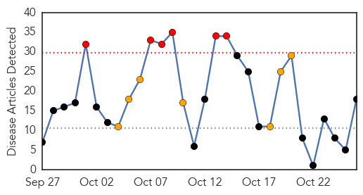
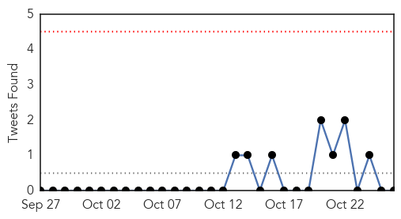
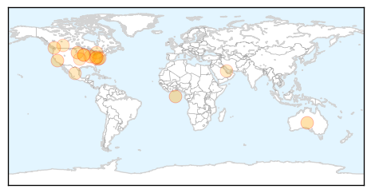
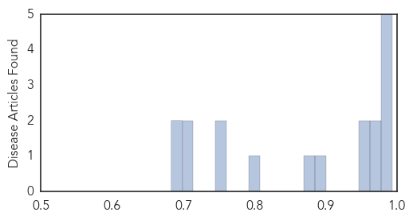

Toggle navigation
Early Warning
Daily Alerts
Influenza
Oct 26, 2015
Compare to:
-
Dengue Fever
Hemmorhagic Fever
Mold/Fungal Infection
Meningitis
Pertussis / Whooping Cough
Middle East Respiratory Syndrome
Cholera
Hepatitis
Chikungunya
Yellow Fever
Bubonic Plague
West Nile Virus
Swine Flu
Ebola
Measles
Unknown
Mumps
30 Day Trends
Web: 6
alerts
, 7
warnings
Twitter: 0
alerts
, 0
warnings
Top Articles:
0.994
Brant health officials recommend flu shot
0.991
Fighting the flu bug
0.991
Thinking of getting a flu shot? Don't put it off
0.987
Flu Shots For Students To Be Stressed In West Virginia
0.981
Premier McNeil: This won’t hurt a bit
0.965
Healthcare workers & flu vaccinations
0.963
Health Officials Expect Flu Shots to be More Effective
0.961
This Year’s Flu Shot Is Ready, State Health Officials Say
0.958
Medical professionals promote flu vaccines
0.898
Today's stories from newspapers in Flamborough
0.884
Is the food supply safe?
0.806
Today's stories from newspapers in Caledon
0.751
Are we prepared for its return?
0.749
Storm Lake Pilot Tribune: State News: Ducks shot in Minnesota test negative for deadly bird flu (10
0.712
Time for mandatory flu shot vaccines for Alberta health-care workers?
0.699
SCH campaign on flu vaccination begins
0.693
Local, state health and education officials discuss importance o
0.683
Vancouver Coastal Health takes flu shots to the people
Top Tweets:
No tweets found for Oct 26, 2015
Web/News Articles

Tweets

Article Locations

Article Confidences
